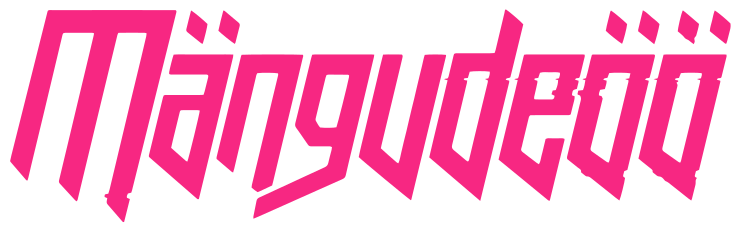

08. Aprill 2017
Apollo Kino Solaris

MängudeÖÖ on videomängudele pühendatud üritus, mille eesmärgiks on meelt lahutada ning tutvustada interaktiivset meediumit kõikidele huvilistele, olgu selleks kas vanad olijad või esmakordsed uudistajad. Ühe ÖÖ jooksul on kinosaalid ning -koridorid täidetud erinevate videomängude, võistluste, atraktsioonide, loengute ja loomulikult õnnelike inimeste rõõmuhõisete ja naerul nägudega!
Kava
- 21:00 Uksed
- 21:10 Avamine (saku saal)
- 21:30 Võistluste check-in ja kohapealne registreerimine
- 00:00-01:00 Louis Zezeran Retro hour
- 04:00 parimate autasustamine (saku saal)
Võistlused:
- 21:30 Overwatch (Saku Saal)
- 22:00 Fifa 17 (saal 3)
- 22:30 Mortal Kombat XL (Telia Saal)
- 23:00-00:00 Cosplay
Loengud
- 21:30 MSI Experience (Telia saal)
- 22:00-22:30 - Greg Louden (Remedy)(saal 4)
- 22:30-23:00 - No Truce With the Furies (ZA/UM Studios)(saal 4)
- 23:00-23:30 - Jonas Brazys (GameOn)(saal 4)
- 23:30-00:00 - Philipp Weber (CD Projekt RED)(saal 4)
- 00:20-00:50 - Brandon Marsh (Creative Mobile, Mainor)(saal 4)
- 00:50-01:20 - José Prieto (Sama Sama Studio)(saal 4)

Korduma kippuvad küsimused
-
Noh... miks mitte? Antud asjaolust kirjutas meie peakorraldaja isegi artikli, millest vastuse võib leida (sellega saab tutvuda siin). Kõik kaebused edastage talle (palun ärge seda tegelikult tehke!). Lisamärkusena olgu öeldud, et see reegel on jätkuvalt raudkindel ning seda ei kõiguta ei täiskasvanud saatja olemasolu ega vanemate kirjalik luba. Lisaks tasuks panna end valmis selleks, et kui näed piisavalt noor välja (uskuge meid, elu jooksul muutub see aina suuremaks komplimendiks), võivad korraldajad küsida teilt kinnituseks dokumenti (mis võiks kindlasti kaasas olla, sest kuidas me muidu teame, eksole) ning kui juhtubki, et oled alaealine ning n-ö “süsteemist läbi lipsanud”, palutakse sul viisakalt ürituselt lahkuda.
-
Võistluskava koostades lähtusime järgmistest põhimõtetest - et oleks midagi vana ja tuttavlikku, ent samas ka uut ja huvitavat. Kahjuks on võistluskohad piiratud ning kõikide mängude võistlusi lihtsalt ei jõua nii ajaliselt kui ka füüsiliselt teha. Õnneks korraldab MängudeÖÖ meeskond erinevaid üritusi aastas mitmeid, seega kui mitte sel korral, siis ehk tulevikus!
-
Teatud kellani tõepoolest. Aga kui kägu kukub 2 korda, siis pannakse kassa lukku.Tasub kiirelt tegutseda! Eelmüügist on ka pilet soodsam!
-
Loomulikult mitte, see on iseenesest selge! Küll aga saab seda osta kohapeal ning (mõõdukas koguses) tarbida… kui vanust piisavalt on.
-
Ürituse ajakava ilmub facebooki evendi alla, samuti jagatakse kohapealses infopunktis välja kavalehti, kus on välja toodud nii erinevate tegevuste kellaajad kui ka ruumiplaan. Kui hätta jääd, küsi kergesti eristuvate korraldustiimi liikmetelt, kuskohast sa seda soetada saad, nad annavad sulle suuna kätte!
-
See küsimus haakub pisut eelmisega, aga kordamine on tarkuse ema! Facebooki event, infopunktis jagatavad kavalehed… Nagu öeldakse: “Sa tead seda drilli!” … Ei, oota, see polnud päris õige...
-
Turniiride tabelid (FIFA 17, Mortal Kombat XL) lähevad üles challonge.com keskkonda, täpsemaid aadresse tuleb aga küsida võistluse korraldajate käest (tegelikult nad ütlevad seda ise ka). Väiksemate võistluste info nende toimumispaigas.
-
Ülima tõenäosusega selle tõttu, et meil on käed-jalad tööd täis (juhul kui kirjutad mõne korraldaja isiklikule kontole, võib see sõnum üldse kuskile spämmikausta ära kaduda). Kui sa oled ka ise üritusel, siis kõige kiirem viis tarvilikku infot meieni toimetada, on edastada see infopunktis olevatele kenadele neidudele.
-
Jah, hellitava nimega “kaubatänav” on olemas ka sel korral! Kui sa tahad aga endale ägedat nänni soetada, võta piisava varuga sularaha kaasa, sest igal pool kaardimakse võimalust ei ole!
-
Just siis sul ongi mõtet tulla, kuidas sa muidu teada saad, et mis need videomängud ikkagi on!
-
Ei, kindlasti mitte. MängudeÖÖl on ohtralt kohti, kus saab mängida ka niisama, olgu siis üksi või koos sõbraga. Meil on ka virtuaalreaalsusseadmed, loengud, cosplay… Tegevust jagub varajateks hommikutundideks!
-
Yo.
-
Klõpsi niipalju kui tahad. Palun ära ainult pantsu shotte tee, eksole. Jäägem siiski mõistuse piiridesse. Jaga pärast oma galerii linki ka ürituse all või siis saada pildid esmalt meile ja kui on hästi äge kraam, siis me paneks need hea meelega Level1 veebilehele üles!
-
Jah. 100%. Ja nad ei lähe kunagi ära!
-
Ei, see ei ole võrgupidu. Meil on piisavalt tehnikat, et terve rügement videomänge mängida saaks! Kui sul on aga kodus mõni pihukonsool, millel mõni äge mäng pooleli on, siis ei keela keegi sul näiteks Overwatchi turniiri vaadata ja samal ajal oma 3DSi või Nintendo Switchi või PS Vitat mängida.
-
Garderoob on tõepoolest olemas, seega loodetavasti ei pea enam nukra näoga oma jopet näpus hoides MängudeÖÖl ringi käima. Kohti on 400 ja oma ürpide hoiustamistasu on 1 euro.
-
Loosis osalemine on väga lihtne neljaastmeline protsess: 1.Osta pilet, 2. Hoia see alles, 3. Loos, 4. Kasum!
-
Palun, siin ei ole küsimustki. Ouya master race!
Sõbrad & partnerid